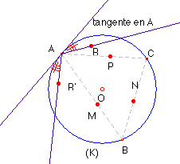
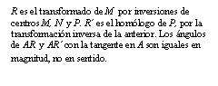
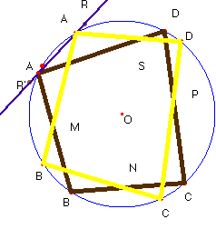
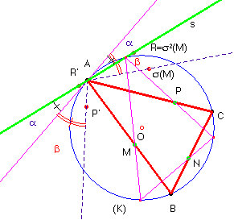
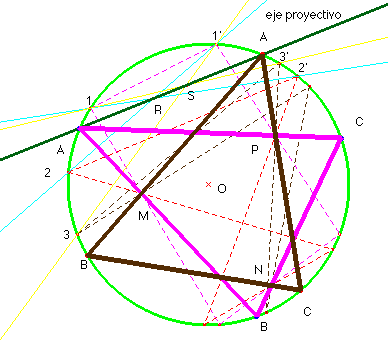
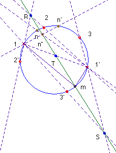
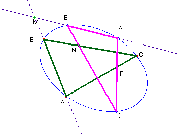

Solución Saturnino Campo Ruiz, profesor de Matemáticas del I.E.S. Fray Luis de León (Salamanca) (4 de marzo de 2003)
Solución euclídea.- El problema quedará resuelto cuando sepamos fijar la posición de uno de los vértices de ese triángulo. Si tomamos inversiones de polos cada uno de los puntos, M, N y P y potencia, la de éstos respecto de la circunferencia, según las propiedades de la inversión en el plano, la circunferencia quedaría invariante por cada una de esas transformaciones, y también por la composición de las mismas. En el supuesto de tener ya resuelto el problema, el vértice A se iría transformando en B, C y otra vez A por las inversiones sucesivas de polos los puntos dados.

Consiguiendo un punto del plano R tal que la recta AR se transformase por esa sucesión de inversiones en otra recta AR’, como la inversión es una transformación conforme (es decir, conserva los ángulos) el ángulo que esas dos rectas forman con el círculo dado es el mismo, y, si además esos ángulos tienen el mismo sentido, resultará que los puntos A, R y R’ estarían alineados. Conseguido esto, la recta RR’, corta al círculo en el vértice A y el problemaquedaría resuelto (con dos soluciones en general).


Este razonamiento sirve tanto para el caso de tener tres puntos como si se tienen n y queremos inscribir un n-gono, que pase por ellos; sin embargo no es tan sencillo como se ha descrito antes, pues la inversión, que como hemos dicho es una transformación conforme, no conserva el sentido de los ángulos, esto es, el ángulo que forman dos rectas y/o circunferencias es igual al opuesto del formado por las figuras homólogas de las anteriores. En el caso de componer varias inversiones, si el número de las que se componen es par, el ángulo final es directamente igual al ángulo de comienzo. Para cuatro puntos, el problema es muy sencillo. En la figura donde aparece resuelto el problema el punto R es el transformado de M por las inversiones sucesivas de centros M, N, P y S; R’ es el transformado de S por la aplicación recíproca de la anterior, esto es si llamo s=IS·IP·IN·IM, entonces s -1 = IM·IN·IP·IS, s (M)=R, y s -1(S)=R’. (Las macroconstrucciones de cabri son una ayuda inestimable para este tipo de gráficos.)

Cuando el número de inversiones que se componen es impar, como es nuestro caso para el triángulo, consideramos que tenemos seis puntos y no tres, en el interior del círculo, a saber, M, N, P, M, N y P. Con esta consideración quedará resuelto el problema, después de dejar claros los detalles:
Sean s2(M) = R y s -2(P) = R'
a) El punto A se transforma otra vez en A después de aplicar s. Luego s2(A) = A.
b) La recta AR’, por IM se transforma en una recta o circunferencia que pasa por M (tanto si AR’ pasa por M como si no es así); como IM (M)= M y s2(M) = R , al aplicar el resto de inversiones a M, éste va pasando a diversos puntos hasta acabar transformándose en R; con ello probamos que la línea en que se transforma AR’ por s2 pasa por R..
c) El punto R’=s-1(s-1(P)) al final de las 5 primeras inversiones se ha transformado en IP(P) = P.
d) Al final de la quinta inversión de las que componen s2, la recta AR' se ha transformado en una recta o circunferencia que pasa por C y por P. Al aplicar la última inversión IP acaba transformándose en una recta que pasa por A (y por R según b).
Para llegar a las conclusiones anteriores se han aplicado las propiedades de la inversión plana, que enunciamos a continuación:
1.- La homóloga de una recta que no pasa por el polo de inversión es una circunferencia que sí pasa por él y viceversa.
2.- La homóloga de una circunferencia que no pasa por el polo es otra circunferencia que tampoco pasa por él.
3.- Las rectas que pasan por el polo se transforman en sí mismas, son invariantes, no fijas.
Denotamos por IX, la inversión de polo X y potencia la de este punto respecto del círculo que lo contiene. Por cuestiones personales estéticas hemos puestos los puntos M, N y P en el interior del círculo, lo que hace más complicada la construcción con cabri pues las potencias de éstos son negativas.
Bibliografía: Geometría Métrica. Puig Adam.
Solución proyectiva.-

Si tomo un punto cualquiera de la circunferencia y lo voy proyectando desde M, N y P, obtengo otro punto en la misma circunferencia. Si el punto origen y el final son el mismo, hemos dado con el vértice A del triángulo que resuelve el problema. En general no será así, pero de este modo queda definida sobre la circunferencia una proyectividad (para que realmente quede definida necesitaremos dar tres puntos y sus homólogos). En la figura hemos tomado los puntos 1, 2 y 3 para definir la proyectividad.Sus homólogos están indicados como 1’, 2’ y 3’. Los puntos dobles de esa proyectividad (dos en general) nos dan las soluciones del problema.

Veamos cómo se pueden obtener el homólogo de un punto en una proyectividad sobre una circunferencia y sus puntos dobles.Consideremos el haz de rectas que resulta de proyectar desde el punto 1, los puntos 1’, 2’, 3’ ... y el que resulta de proyectar desde el punto 1’, los puntos 1,2,3... Estos haces se proyectan a su vez sobre la recta r que determinan los puntos de intersección de dos rayos homólogos, el R = (1’2)∩(12’) y el S = (1’3)∩(13’). Se define así una proyectividad sobre r: (1’n) ∩ r à (1n’) ∩ r en la que hay tres puntos dobles, R y S, y el de intersección de r con la recta doble (11’): T; de aquí que sean dobles todos los puntos de la misma. Esa es la recta que llamamos eje proyectivo.
Si un punto es doble (homólogo de sí mismo) entonces las rectas 1m (= 1m’) y 1’m se cortan en el eje proyectivo, o sea m está en r, esto es, el eje proyectivo pasa por los puntos dobles de (1,2,3) à (1’,2’,3’), con lo cual es independiente del par de puntos 1 y 1’ elegidos para su construcción, y, por tanto, contiene los puntos de intersección de todas las rectas determinadas por parejas de puntos no homólogos mn’ con sus correspondientes m’n. (Que R, S y T están alineados puede obtenerse aplicando el teorema de Pascal al hexágono de vértices 1;2’;3;1’;2;3’ inscrito en una cónica —en este caso una circunferencia— : los puntos de intersección de los lados opuestos están alineados en la recta de Pascal, nuestro eje proyectivo).
En resumen:
1.- Para hallar el homólogo de n en (1,2,3) à (1’,2’,3’), lo proyectamos desde 1’ sobre el eje proyectivo en n”. La intersección de (1n”) con la circunferencia da el homólogo n’ de n.
2.- Los puntos dobles son la intersección de la circunferencia con el eje proyectivo.
La resolución del problema de Castillon para 4 puntos (o para n) es exactamente igual: hay que trazar más líneas y complicar un poco el dibujo. La solución a este problema es independiente de tener una circunferencia o cualquier otra cónica

, (en la figura solamente son interiores a la elipse los puntos N y P). Las macro del programa cabri hacen que la construcción sea mucho más sencilla, aunque nosotros la hemos hecho con todo detalle, sin hacer uso de ellas en el caso de la circunferencia.Bibliografía: Geometría Métrica. Puig Adam.